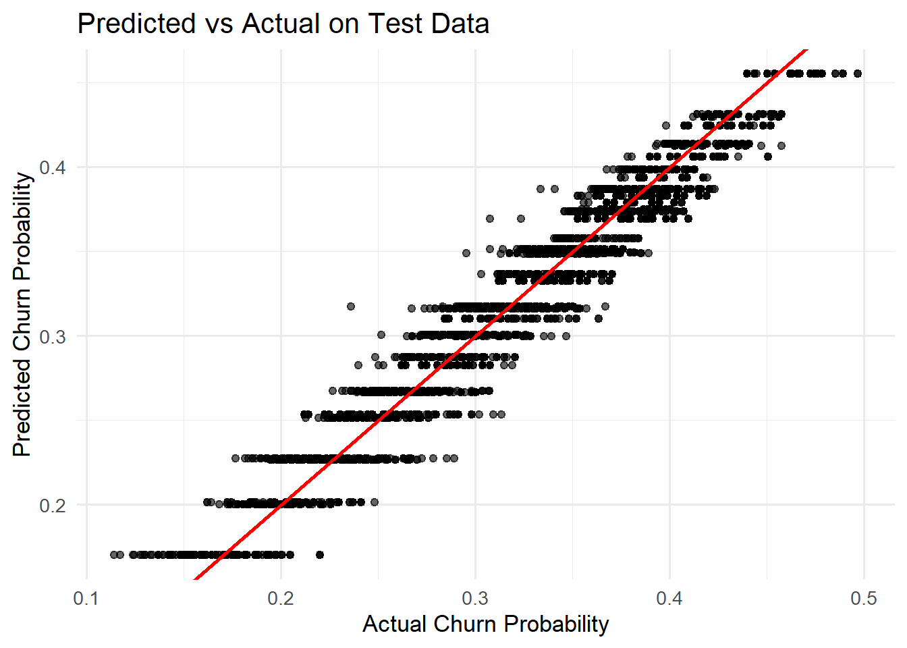
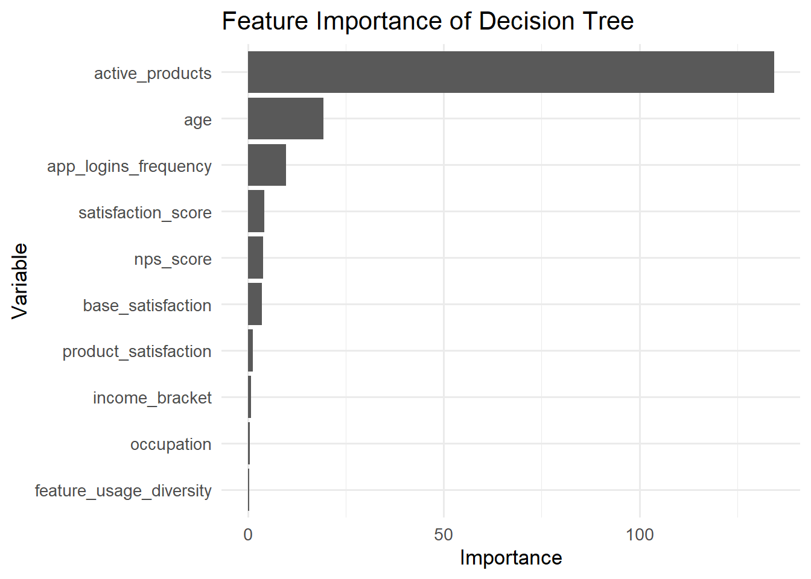
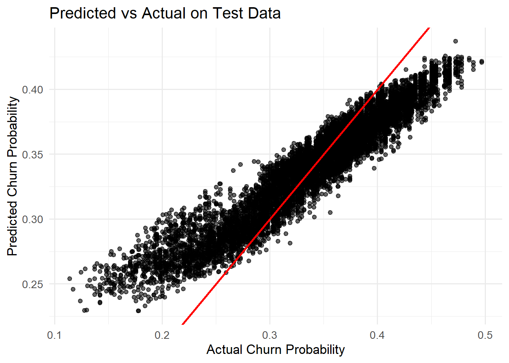
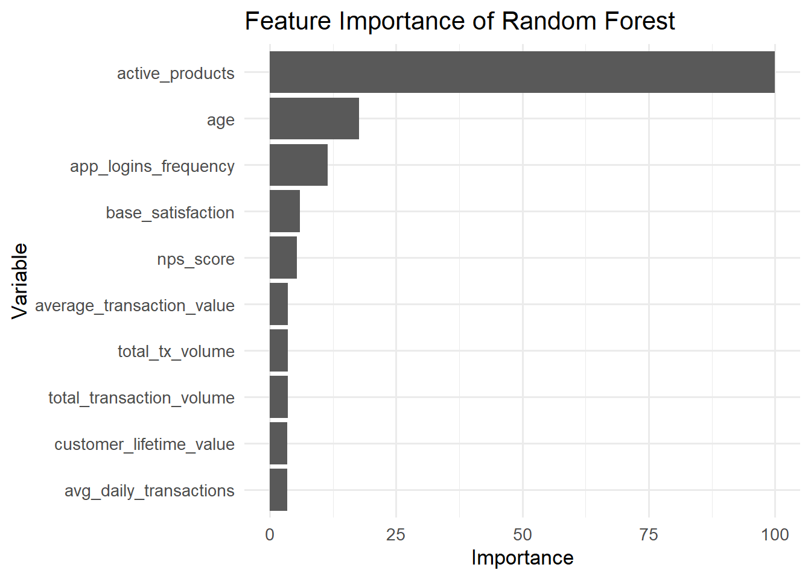

pacman::p_load(tidyverse, rpart, rpart.plot, sparkline, visNetwork,
caret, ranger, patchwork)Predict Model
Load Packages and Data
customer_data <- read_csv("data/customer_data.csv") Rows: 48723 Columns: 54
── Column specification ────────────────────────────────────────────────────────
Delimiter: ","
chr (13): gender, location, income_bracket, occupation, education_level, ma...
dbl (29): customer_id, age, household_size, active_products, app_logins_fre...
lgl (7): savings_account, credit_card, personal_loan, investment_account, ...
date (5): first_tx, last_tx, last_survey_date, last_transaction_date, first...
ℹ Use `spec()` to retrieve the full column specification for this data.
ℹ Specify the column types or set `show_col_types = FALSE` to quiet this message.Data Pre-processing
glimpse(customer_data)Rows: 48,723
Columns: 54
$ customer_id <dbl> 93716481, 49020929, 52690950, 23199751, 619…
$ age <dbl> 44, 44, 45, 45, 44, 45, 44, 44, 45, 44, 44,…
$ gender <chr> "Male", "Male", "Male", "Male", "Female", "…
$ location <chr> "Pereira, Risaralda", "Cali, Valle del Cauc…
$ income_bracket <chr> "Very High", "Medium", "High", "High", "Med…
$ occupation <chr> "Engineer", "Construction Worker", "Constru…
$ education_level <chr> "Master", "Bachelor", "Bachelor", "High Sch…
$ marital_status <chr> "Married", "Married", "Married", "Single", …
$ household_size <dbl> 5, 2, 4, 2, 3, 4, 4, 3, 1, 3, 5, 3, 3, 7, 3…
$ acquisition_channel <chr> "Partnership", "Paid Ad", "Paid Ad", "Refer…
$ customer_segment <chr> "occasional", "regular", "inactive", "inact…
$ savings_account <lgl> TRUE, TRUE, TRUE, TRUE, TRUE, TRUE, TRUE, T…
$ credit_card <lgl> TRUE, FALSE, FALSE, FALSE, TRUE, TRUE, TRUE…
$ personal_loan <lgl> FALSE, FALSE, FALSE, FALSE, FALSE, FALSE, F…
$ investment_account <lgl> FALSE, FALSE, TRUE, TRUE, FALSE, TRUE, FALS…
$ insurance_product <lgl> TRUE, FALSE, TRUE, FALSE, FALSE, FALSE, FAL…
$ active_products <dbl> 1, 5, 3, 2, 1, 1, 1, 4, 2, 3, 1, 5, 3, 1, 1…
$ app_logins_frequency <dbl> 15, 30, 4, 15, 19, 15, 44, 22, 7, 11, 7, 30…
$ feature_usage_diversity <dbl> 3, 0, 4, 4, 1, 4, 6, 1, 1, 6, 3, 1, 2, 1, 3…
$ bill_payment_user <lgl> FALSE, TRUE, TRUE, TRUE, FALSE, TRUE, TRUE,…
$ auto_savings_enabled <lgl> FALSE, FALSE, FALSE, FALSE, FALSE, TRUE, FA…
$ credit_utilization_ratio <dbl> 0.17871029, NA, NA, NA, 0.40360553, 0.07786…
$ international_transactions <dbl> 1, 1, 1, 1, 0, 0, 0, 0, 0, 1, 0, 0, 0, 1, 0…
$ failed_transactions <dbl> 0, 0, 0, 1, 0, 0, 1, 1, 0, 0, 1, 0, 0, 1, 0…
$ tx_count <dbl> 76, 10, 10, 23, 18, 15, 24, 45, 134, 13, 18…
$ avg_tx_value <dbl> 1679872.4, 5445810.0, 640335.0, 660180.4, 1…
$ total_tx_volume <dbl> 127670300, 54458100, 6403350, 15184150, 262…
$ first_tx <date> 2023-01-05, 2023-02-05, 2023-01-31, 2023-0…
$ last_tx <date> 2023-12-25, 2023-12-20, 2023-12-12, 2023-1…
$ base_satisfaction <dbl> 9.213372, 6.073093, 8.198643, 7.529577, 6.6…
$ tx_satisfaction <dbl> 0.380, 0.050, 0.050, 0.115, 0.090, 0.075, 0…
$ product_satisfaction <dbl> 0.6, 0.2, 0.6, 0.4, 0.4, 0.6, 0.4, 0.4, 0.6…
$ satisfaction_score <dbl> 5, 3, 4, 4, 3, 4, 4, 4, 5, 4, 4, 5, 4, 3, 4…
$ nps_score <dbl> -7, -46, -29, -31, -47, -29, -34, -36, -4, …
$ last_survey_date <date> 2023-12-16, 2023-05-05, 2023-11-16, 2023-0…
$ support_tickets_count <dbl> 1, 1, 0, 2, 2, 1, 1, 0, 2, 0, 0, 2, 3, 1, 0…
$ resolved_tickets_ratio <dbl> 0.0000000, 1.0000000, 0.0000000, 0.5000000,…
$ app_store_rating <dbl> 3.5, 4.0, 5.0, 4.5, 4.0, 4.0, 5.0, 4.5, 4.5…
$ feedback_sentiment <chr> "Neutral", "Positive", "Positive", "Positiv…
$ feature_requests <chr> "Budgeting tools", NA, NA, "Cryptocurrency …
$ complaint_topics <chr> NA, NA, NA, NA, "App performance", NA, NA, …
$ clv_segment <chr> "Gold", "Bronze", "Gold", "Bronze", "Gold",…
$ monthly_transaction_count <dbl> 1.428571, 1.571429, 2.500000, 1.555556, 2.1…
$ average_transaction_value <dbl> 6054025.0, 2127413.6, 3575915.0, 1513353.6,…
$ total_transaction_volume <dbl> 60540250, 23401550, 35759150, 21186950, 116…
$ transaction_frequency <dbl> 0.03076923, 0.03293413, 0.05000000, 0.04778…
$ last_transaction_date <date> 2023-12-05, 2023-12-18, 2023-10-27, 2023-1…
$ preferred_transaction_type <chr> "Transfer", "Transfer", "Transfer", "Transf…
$ first_transaction_date <date> 2023-01-05, 2023-02-05, 2023-01-31, 2023-0…
$ weekend_transaction_ratio <dbl> 0.30000000, 0.18181818, 0.30000000, 0.14285…
$ avg_daily_transactions <dbl> 0.03076923, 0.03293413, 0.05000000, 0.04778…
$ customer_tenure <dbl> 11.633333, 11.500000, 8.766667, 10.733333, …
$ churn_probability <dbl> 0.3622688, 0.1817896, 0.3212651, 0.3366287,…
$ customer_lifetime_value <dbl> 312414808, 167022286, 19403711, 35978105, 3…Check for duplicates
duplicate_count <- sum(duplicated(customer_data))
if (duplicate_count > 0) {
message("There are ", duplicate_count, " duplicate rows in the dataset.")
} else {
message("There are no duplicate rows in the dataset.")
}There are no duplicate rows in the dataset.A quick check for duplicate records confirms that there are no duplicated customer IDs in the customer dataset.
check and handle missing value
na_summary <- data.frame(
column_name = names(customer_data),
na_count = sapply(customer_data, function(x) sum(is.na(x))),
na_percentage = sapply(customer_data, function(x) mean(is.na(x)) * 100)
)
na_summary %>%
filter(na_count > 0) column_name na_count na_percentage
credit_utilization_ratio credit_utilization_ratio 18263 37.48332
feature_requests feature_requests 16115 33.07473
complaint_topics complaint_topics 24346 49.96819The variables credit_utilization_ratio and feature_requests were removed from the dataset due to their relatively high proportion of missing values. For the variable complaint_topics, missing values were interpreted as cases where customers did not report any specific complaints. Therefore, these missing entries were recoded as “No complaint”.
customer_data <- customer_data %>% select(-credit_utilization_ratio, -feature_requests)
customer_data <- customer_data %>%
mutate(
complaint_topics = ifelse(is.na(complaint_topics),
"No complaint",
complaint_topics)
)Confirm data type of target variable
The target variable churn_probability was checked before modeling. The summary statistics indicate that the variable ranges from 0.114 to 0.501 and is stored as a numeric type, confirming that a regression tree is appropriate for this analysis.
summary(customer_data$churn_probability) Min. 1st Qu. Median Mean 3rd Qu. Max.
0.1143 0.3029 0.3540 0.3429 0.3927 0.5006 class(customer_data$churn_probability)[1] "numeric"Convert Character Variables to Factors
All character variables were converted into factor type so that they can be correctly treated as categorical variables in the decision tree model.
customer_data <- customer_data %>%
mutate(across(where(is.character), as.factor))Remove unnecessary attributes
Several attributes were removed during the preprocessing stage to improve model reliability. First, customer_id was removed because it represents a unique identifier for each customer. Including such variables in the model would not contribute to predictive power and may lead to overfitting.
In addition, first_tx and first_transaction_date were identified as duplicated attributes describing the customer’s first transaction date. Since the first transaction timing is considered to have limited interpretability for predicting churn behavior in the current analysis, these variables were removed.
Similarly, last_tx and last_transaction_date share the same definition of the customer’s most recent transaction date. However, inconsistencies were observed between the two columns. To avoid potential misuse of ambiguous information, both variables were excluded from the modeling dataset.
The variable last_survey_date was removed from the model because its date format is incompatible with decision tree algorithms. Furthermore, initial assessments indicated that the specific date of the last survey has no direct correlation with churn probability, making it a redundant feature for this analysis.
customer_data <- customer_data %>%
select(
-customer_id,
-first_tx,
-first_transaction_date,
-last_tx,
-last_transaction_date,
-last_survey_date
)glimpse(customer_data)Rows: 48,723
Columns: 46
$ age <dbl> 44, 44, 45, 45, 44, 45, 44, 44, 45, 44, 44,…
$ gender <fct> Male, Male, Male, Male, Female, Female, Mal…
$ location <fct> "Pereira, Risaralda", "Cali, Valle del Cauc…
$ income_bracket <fct> Very High, Medium, High, High, Medium, Medi…
$ occupation <fct> Engineer, Construction Worker, Construction…
$ education_level <fct> Master, Bachelor, Bachelor, High School, Ba…
$ marital_status <fct> Married, Married, Married, Single, Married,…
$ household_size <dbl> 5, 2, 4, 2, 3, 4, 4, 3, 1, 3, 5, 3, 3, 7, 3…
$ acquisition_channel <fct> Partnership, Paid Ad, Paid Ad, Referral, Pa…
$ customer_segment <fct> occasional, regular, inactive, inactive, po…
$ savings_account <lgl> TRUE, TRUE, TRUE, TRUE, TRUE, TRUE, TRUE, T…
$ credit_card <lgl> TRUE, FALSE, FALSE, FALSE, TRUE, TRUE, TRUE…
$ personal_loan <lgl> FALSE, FALSE, FALSE, FALSE, FALSE, FALSE, F…
$ investment_account <lgl> FALSE, FALSE, TRUE, TRUE, FALSE, TRUE, FALS…
$ insurance_product <lgl> TRUE, FALSE, TRUE, FALSE, FALSE, FALSE, FAL…
$ active_products <dbl> 1, 5, 3, 2, 1, 1, 1, 4, 2, 3, 1, 5, 3, 1, 1…
$ app_logins_frequency <dbl> 15, 30, 4, 15, 19, 15, 44, 22, 7, 11, 7, 30…
$ feature_usage_diversity <dbl> 3, 0, 4, 4, 1, 4, 6, 1, 1, 6, 3, 1, 2, 1, 3…
$ bill_payment_user <lgl> FALSE, TRUE, TRUE, TRUE, FALSE, TRUE, TRUE,…
$ auto_savings_enabled <lgl> FALSE, FALSE, FALSE, FALSE, FALSE, TRUE, FA…
$ international_transactions <dbl> 1, 1, 1, 1, 0, 0, 0, 0, 0, 1, 0, 0, 0, 1, 0…
$ failed_transactions <dbl> 0, 0, 0, 1, 0, 0, 1, 1, 0, 0, 1, 0, 0, 1, 0…
$ tx_count <dbl> 76, 10, 10, 23, 18, 15, 24, 45, 134, 13, 18…
$ avg_tx_value <dbl> 1679872.4, 5445810.0, 640335.0, 660180.4, 1…
$ total_tx_volume <dbl> 127670300, 54458100, 6403350, 15184150, 262…
$ base_satisfaction <dbl> 9.213372, 6.073093, 8.198643, 7.529577, 6.6…
$ tx_satisfaction <dbl> 0.380, 0.050, 0.050, 0.115, 0.090, 0.075, 0…
$ product_satisfaction <dbl> 0.6, 0.2, 0.6, 0.4, 0.4, 0.6, 0.4, 0.4, 0.6…
$ satisfaction_score <dbl> 5, 3, 4, 4, 3, 4, 4, 4, 5, 4, 4, 5, 4, 3, 4…
$ nps_score <dbl> -7, -46, -29, -31, -47, -29, -34, -36, -4, …
$ support_tickets_count <dbl> 1, 1, 0, 2, 2, 1, 1, 0, 2, 0, 0, 2, 3, 1, 0…
$ resolved_tickets_ratio <dbl> 0.0000000, 1.0000000, 0.0000000, 0.5000000,…
$ app_store_rating <dbl> 3.5, 4.0, 5.0, 4.5, 4.0, 4.0, 5.0, 4.5, 4.5…
$ feedback_sentiment <fct> Neutral, Positive, Positive, Positive, Posi…
$ complaint_topics <fct> No complaint, No complaint, No complaint, N…
$ clv_segment <fct> Gold, Bronze, Gold, Bronze, Gold, Bronze, B…
$ monthly_transaction_count <dbl> 1.428571, 1.571429, 2.500000, 1.555556, 2.1…
$ average_transaction_value <dbl> 6054025.0, 2127413.6, 3575915.0, 1513353.6,…
$ total_transaction_volume <dbl> 60540250, 23401550, 35759150, 21186950, 116…
$ transaction_frequency <dbl> 0.03076923, 0.03293413, 0.05000000, 0.04778…
$ preferred_transaction_type <fct> Transfer, Transfer, Transfer, Transfer, Pay…
$ weekend_transaction_ratio <dbl> 0.30000000, 0.18181818, 0.30000000, 0.14285…
$ avg_daily_transactions <dbl> 0.03076923, 0.03293413, 0.05000000, 0.04778…
$ customer_tenure <dbl> 11.633333, 11.500000, 8.766667, 10.733333, …
$ churn_probability <dbl> 0.3622688, 0.1817896, 0.3212651, 0.3366287,…
$ customer_lifetime_value <dbl> 312414808, 167022286, 19403711, 35978105, 3…Export RDS file for shiny
write_rds(customer_data, "data/customer_data_clean.rds")customer_data_clean <- read_rds("data/customer_data_clean.rds")
glimpse(customer_data_clean)Rows: 48,723
Columns: 46
$ age <dbl> 44, 44, 45, 45, 44, 45, 44, 44, 45, 44, 44,…
$ gender <fct> Male, Male, Male, Male, Female, Female, Mal…
$ location <fct> "Pereira, Risaralda", "Cali, Valle del Cauc…
$ income_bracket <fct> Very High, Medium, High, High, Medium, Medi…
$ occupation <fct> Engineer, Construction Worker, Construction…
$ education_level <fct> Master, Bachelor, Bachelor, High School, Ba…
$ marital_status <fct> Married, Married, Married, Single, Married,…
$ household_size <dbl> 5, 2, 4, 2, 3, 4, 4, 3, 1, 3, 5, 3, 3, 7, 3…
$ acquisition_channel <fct> Partnership, Paid Ad, Paid Ad, Referral, Pa…
$ customer_segment <fct> occasional, regular, inactive, inactive, po…
$ savings_account <lgl> TRUE, TRUE, TRUE, TRUE, TRUE, TRUE, TRUE, T…
$ credit_card <lgl> TRUE, FALSE, FALSE, FALSE, TRUE, TRUE, TRUE…
$ personal_loan <lgl> FALSE, FALSE, FALSE, FALSE, FALSE, FALSE, F…
$ investment_account <lgl> FALSE, FALSE, TRUE, TRUE, FALSE, TRUE, FALS…
$ insurance_product <lgl> TRUE, FALSE, TRUE, FALSE, FALSE, FALSE, FAL…
$ active_products <dbl> 1, 5, 3, 2, 1, 1, 1, 4, 2, 3, 1, 5, 3, 1, 1…
$ app_logins_frequency <dbl> 15, 30, 4, 15, 19, 15, 44, 22, 7, 11, 7, 30…
$ feature_usage_diversity <dbl> 3, 0, 4, 4, 1, 4, 6, 1, 1, 6, 3, 1, 2, 1, 3…
$ bill_payment_user <lgl> FALSE, TRUE, TRUE, TRUE, FALSE, TRUE, TRUE,…
$ auto_savings_enabled <lgl> FALSE, FALSE, FALSE, FALSE, FALSE, TRUE, FA…
$ international_transactions <dbl> 1, 1, 1, 1, 0, 0, 0, 0, 0, 1, 0, 0, 0, 1, 0…
$ failed_transactions <dbl> 0, 0, 0, 1, 0, 0, 1, 1, 0, 0, 1, 0, 0, 1, 0…
$ tx_count <dbl> 76, 10, 10, 23, 18, 15, 24, 45, 134, 13, 18…
$ avg_tx_value <dbl> 1679872.4, 5445810.0, 640335.0, 660180.4, 1…
$ total_tx_volume <dbl> 127670300, 54458100, 6403350, 15184150, 262…
$ base_satisfaction <dbl> 9.213372, 6.073093, 8.198643, 7.529577, 6.6…
$ tx_satisfaction <dbl> 0.380, 0.050, 0.050, 0.115, 0.090, 0.075, 0…
$ product_satisfaction <dbl> 0.6, 0.2, 0.6, 0.4, 0.4, 0.6, 0.4, 0.4, 0.6…
$ satisfaction_score <dbl> 5, 3, 4, 4, 3, 4, 4, 4, 5, 4, 4, 5, 4, 3, 4…
$ nps_score <dbl> -7, -46, -29, -31, -47, -29, -34, -36, -4, …
$ support_tickets_count <dbl> 1, 1, 0, 2, 2, 1, 1, 0, 2, 0, 0, 2, 3, 1, 0…
$ resolved_tickets_ratio <dbl> 0.0000000, 1.0000000, 0.0000000, 0.5000000,…
$ app_store_rating <dbl> 3.5, 4.0, 5.0, 4.5, 4.0, 4.0, 5.0, 4.5, 4.5…
$ feedback_sentiment <fct> Neutral, Positive, Positive, Positive, Posi…
$ complaint_topics <fct> No complaint, No complaint, No complaint, N…
$ clv_segment <fct> Gold, Bronze, Gold, Bronze, Gold, Bronze, B…
$ monthly_transaction_count <dbl> 1.428571, 1.571429, 2.500000, 1.555556, 2.1…
$ average_transaction_value <dbl> 6054025.0, 2127413.6, 3575915.0, 1513353.6,…
$ total_transaction_volume <dbl> 60540250, 23401550, 35759150, 21186950, 116…
$ transaction_frequency <dbl> 0.03076923, 0.03293413, 0.05000000, 0.04778…
$ preferred_transaction_type <fct> Transfer, Transfer, Transfer, Transfer, Pay…
$ weekend_transaction_ratio <dbl> 0.30000000, 0.18181818, 0.30000000, 0.14285…
$ avg_daily_transactions <dbl> 0.03076923, 0.03293413, 0.05000000, 0.04778…
$ customer_tenure <dbl> 11.633333, 11.500000, 8.766667, 10.733333, …
$ churn_probability <dbl> 0.3622688, 0.1817896, 0.3212651, 0.3366287,…
$ customer_lifetime_value <dbl> 312414808, 167022286, 19403711, 35978105, 3…Decision Tree
Train-Test Split
The Shiny application allows users to customize the train-test split ratio. By default, the system is configured with an 80/20 split, allocating 80% of the dataset for training and the remaining 20% for testing.
set.seed(1234)
train_index <- createDataPartition(
customer_data_clean$churn_probability,
p = 0.8,
list = FALSE
)
df_train <- customer_data_clean[train_index, ]
df_test <- customer_data_clean[-train_index, ]Build Regression Tree Function
Since the target variable churn_probability is a continuous variable, we implemented a regression tree rather than a classification tree. In the current code, the model training function is parameterized specifically for min_split, complexity_parameter, and max_depth. Looking ahead, the Shiny application will expand this flexibility, allowing users to not only tune these parameters but also select their own set of predictors and customize the data partition ratio.
tree_model <- function(min_split, complexity_parameter, max_depth) {
rpart(
churn_probability ~ .,
data = df_train,
method = "anova",
control = rpart.control(
minsplit = min_split,
cp = complexity_parameter,
maxdepth = max_depth
)
)
}
fit_tree <- tree_model(min_split = 10, complexity_parameter = 0.001, max_depth = 10
)View Regression Tree
visTree(fit_tree, edgesFontSize = 14, nodesFontSize = 16, width = "100%")Predict on Test Data
df_test$pred_tree <- predict(fit_tree, newdata = df_test)Predicted vs Actual on Test Data
To evaluate the predictive performance, a scatter plot of predicted versus actual churn probabilities was constructed. The strong alignment of data points along the 45-degree reference line demonstrates the high reliability of the regression tree in estimating churn risks.
ggplot(df_test, aes(x = churn_probability, y = pred_tree)) +
geom_point(alpha = 0.6) +
geom_abline(slope = 1, intercept = 0, color = "red", linewidth = 1) +
labs(
title = "Predicted vs Actual on Test Data",
x = "Actual Churn Probability",
y = "Predicted Churn Probability"
) +
theme_minimal(base_size = 13)
Feature Importance of Decision Tree
We extract the variable.importance attribute from the fit_tree model and convert it into a structured table format for easier processing. The variables are then sorted in descending order based on their importance scores, and only the top 10 most influential features are retained. This approach prevents the visualization from becoming overcrowded and ensures that the most critical drivers of the model are clearly highlighted.
tree_importance <- tibble(
Variable = names(fit_tree$variable.importance),
Importance = as.numeric(fit_tree$variable.importance)
) %>%
arrange(desc(Importance))
tree_importance %>%
slice_head(n = 10) %>%
ggplot(aes(x = reorder(Variable, Importance), y = Importance)) +
geom_col() +
coord_flip() +
labs(
title = "Feature Importance of Decision Tree",
x = "Variable",
y = "Importance"
) +
theme_minimal(base_size = 13)
Model Performance Metrics
This code segment calculates key performance metrics to evaluate the accuracy of our regression model on the testing dataset:
RMSE (Root Mean Square Error): Measures the average magnitude of the error by taking the square root of average squared differences. It is particularly sensitive to large outliers.
MAE (Mean Absolute Error): Represents the average absolute difference between predicted and actual values, offering a more intuitive measure of prediction error.
R-squared (\(R^2\)): Calculated as the square of the correlation between predicted and actual values. It indicates the proportion of variance in churn_probability explained by the model.
Looking forward, these performance metrics will be integrated into the Shiny application dashboard. This will allow users to monitor the model’s accuracy in real-time as they adjust parameters or update datasets.
rmse_value <- sqrt(mean((df_test$churn_probability - df_test$pred_tree)^2))
mae_value <- mean(abs(df_test$churn_probability - df_test$pred_tree))
r2_value <- cor(df_test$churn_probability, df_test$pred_tree)^2
tibble(
Metric = c("RMSE", "MAE", "R-squared"),
Value = round(c(rmse_value, mae_value, r2_value), 4)
)# A tibble: 3 × 2
Metric Value
<chr> <dbl>
1 RMSE 0.0138
2 MAE 0.0108
3 R-squared 0.958 Random Forest
Train-Test Split
Similar to the decision tree model, the Shiny application allows users to customize the train-test split ratio for the random forest model. By default, the current implementation also uses an 80/20 split, where 80% of the dataset is allocated to the training set and the remaining 20% is reserved for testing.
set.seed(1234)
train_index_rf <- createDataPartition(
customer_data_clean$churn_probability,
p = 0.8,
list = FALSE
)
df_train_rf <- customer_data_clean[train_index_rf, ]
df_test_rf <- customer_data_clean[-train_index_rf, ]Build Random Forest Function
we use the ranger engine through the caret framework. The current code is parameterized for the number of trees, allowing the model complexity to be adjusted. After the Shiny application will allow users to choose their own predictors, customize the train-test split ratio, and modify the number of trees interactively.
rf_grid <- expand.grid(
mtry = max(1, floor(sqrt(ncol(df_train_rf) - 1))),
splitrule = "variance",
min.node.size = 5
)
rf_control <- trainControl(method = "none")
rf_model <- function(num_trees) {
train(
churn_probability ~ .,
data = df_train_rf,
method = "ranger",
trControl = rf_control,
tuneGrid = rf_grid,
num.trees = num_trees,
importance = "impurity"
)
}
fit_rf <- rf_model(num_trees = 100)Predict on Test Data
df_test_rf$pred_rf <- predict(fit_rf, newdata = df_test_rf)Predicted vs Actual on Test Data
To evaluate the predictive performance, a scatter plot of predicted versus actual churn probabilities was constructed. Similar to the decision tree model, a strong concentration of points around the 45-degree reference line indicates that the random forest model is able to generate reliable estimates of churn risk.
ggplot(df_test_rf, aes(x = churn_probability, y = pred_rf)) +
geom_point(alpha = 0.6) +
geom_abline(slope = 1, intercept = 0, color = "red", linewidth = 1) +
labs(
title = "Predicted vs Actual on Test Data",
x = "Actual Churn Probability",
y = "Predicted Churn Probability"
) +
theme_minimal(base_size = 13)
Feature Importance of Random Forest
We extract the variable importance scores from the fitted random forest model using the varImp() function and convert them into a structured table format for easier interpretation. The variables are then sorted in descending order according to their importance scores, and only the top 10 most influential features are displayed.
rf_importance <- varImp(fit_rf)$importance %>%
tibble::rownames_to_column("Variable") %>%
rename(Importance = Overall) %>%
arrange(desc(Importance))
rf_importance %>%
slice_head(n = 10) %>%
ggplot(aes(x = reorder(Variable, Importance), y = Importance)) +
geom_col() +
coord_flip() +
labs(
title = "Feature Importance of Random Forest",
x = "Variable",
y = "Importance"
) +
theme_minimal(base_size = 13)
Model Performance Metrics
The concept is same as decision tree metrics.
rmse_value_rf <- sqrt(mean((df_test_rf$churn_probability - df_test_rf$pred_rf)^2))
mae_value_rf <- mean(abs(df_test_rf$churn_probability - df_test_rf$pred_rf))
r2_value_rf <- cor(df_test_rf$churn_probability, df_test_rf$pred_rf)^2
tibble(
Metric = c("RMSE", "MAE", "R-squared"),
Value = round(c(rmse_value_rf, mae_value_rf, r2_value_rf), 4)
)# A tibble: 3 × 2
Metric Value
<chr> <dbl>
1 RMSE 0.0316
2 MAE 0.0243
3 R-squared 0.909